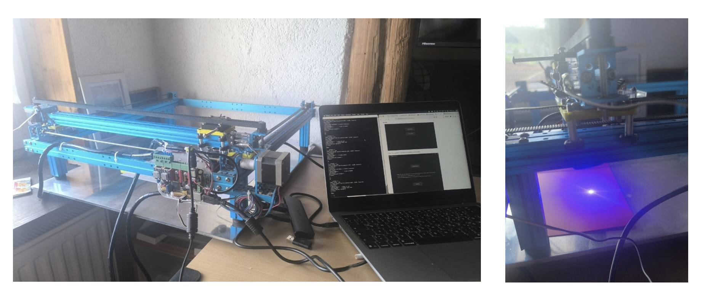
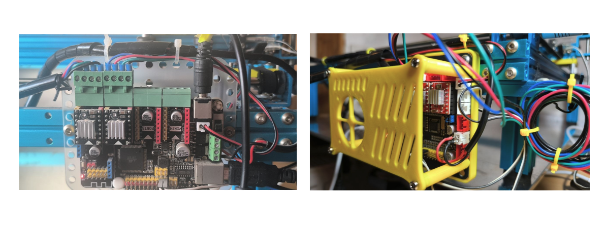

🔌 A machine that runs on standard Marlin firmware — talking a completely non-standard protocol
MegaPi board · Marlin 1.0.2+ · custom-patched acknowledgment string
With the belt holders reprinted in PETG and the mechanics sound again, the machine could physically move. But a laser cutter is only as alive as its control software — and this one's original software wasn't just old, it was last-century old in spirit: a bespoke, closed, Windows-first tool built by Makeblock around 2015–2017, before anything like a shared open standard for hobbyist laser senders really existed. Nobody has touched it in almost a decade.
The MLaser GitHub repo lists two release links — one for Windows, one for Mac. The Windows link was simply gone: a broken URL pointing at infrastructure Makeblock stopped maintaining years ago. The Mac link, against expectations, still resolved.
Downloading and opening the Mac build got exactly the response you'd expect from an unsigned, unnotarized 2017 .app: macOS's Gatekeeper flagged it as "damaged and can't be opened," its default (and often misleading) message for anything lacking a valid, current code signature — not necessarily an actually corrupted file.
Bypassing Gatekeeper manually — removing the quarantine attribute macOS attaches to downloaded files rather than trusting the "damaged" verdict at face value — let the app launch normally. mLaser 1.x, untouched since 2017, running again on a current Mac.
The repo turned out to be genuinely well documented — just not in a way most people revisiting this hardware today can use directly. The manuals are entirely in Chinese, except for the code itself, which at least gave something to search against. At this point the documentation has more historical value than practical value: it's a snapshot of how differently a small hardware company approached "just make it work" a decade ago.
The clearest example: Makeblock didn't just write their own sender application — they wrote their own bitmap2gcode module to generate G-code for photo engraving, rather than building on any existing tool. Sender, protocol, and G-code generation for image engraving were all custom, all in-house, all closed. Nothing about the stack expected to ever talk to software Makeblock didn't write.
With the mechanics fixed and Marlin confirmed running, the obvious next step was a modern, actively maintained sender: CNCjs. It connected, it looked like it was working — and then it wasn't. M4 commands got sent and simply resent, forever, as if nothing had ever executed. Meanwhile, sending the exact same commands by hand over a raw serial terminal worked perfectly, every time.
The Chinese documentation had the answer, buried in a section about the communication protocol between the host computer and Marlin:
That single line explains everything. Every mainstream G-code sender — CNCjs, LightBurn, UGS, bCNC, all of them — is written expecting the standard Marlin/GRBL handshake: the plain word ok, meaning "line executed, safe to send the next one." This particular board's firmware was custom-patched by Makeblock, specifically for mLaser, to send oMG instead — a private, non-standard token no off-the-shelf sender has ever been taught to recognize.
It also explains, retroactively, why manual terminal control "just worked" from the very first session: a human reading the output and deciding when to send the next line doesn't care what exact word comes back. There's no strict ok-parsing logic standing in the way — just a person looking at the screen.
This isn't a bug a sender-side setting can fix — it's the firmware itself speaking a private dialect that predates the "just use standard ok" convention every modern tool now assumes. Patching around it was possible in theory: a serial proxy rewriting oMG to ok on the fly, or re-flashing Marlin without the mLaser-specific patch. Both are real fixes for the software problem — and both are also more fragile, more time-consuming, and more custom-maintenance than the actual goal (a working laser cutter) really calls for.
Instead, the more pragmatic move: replace the MegaPi controller entirely with a board that speaks a protocol every modern sender already understands natively.
GRBL 1.1 is the de facto standard firmware for exactly this class of small hobbyist CNC/laser controller — which means CNCjs, LightBurn, UGS, and bCNC all speak to it without translation, macros, or workarounds of any kind. The oMG problem doesn't get patched; it gets made irrelevant, because the board that invented it is no longer in the loop.
The trade-off is honest: this means retiring the original MegaPi/Marlin electronics rather than fully reviving them, and re-wiring the existing stepper motors and endstops onto the new board once it arrives. But given that the original board's entire reason for being non-standard was a piece of software that's been dead since 2017, keeping it around mostly meant keeping the incompatibility around too.
The new board did arrive — the full wiring, GRBL configuration, a manual-homing workaround, a calibration hunt, and the machine's first real engraving are all in GRBL Board Upgrade.
